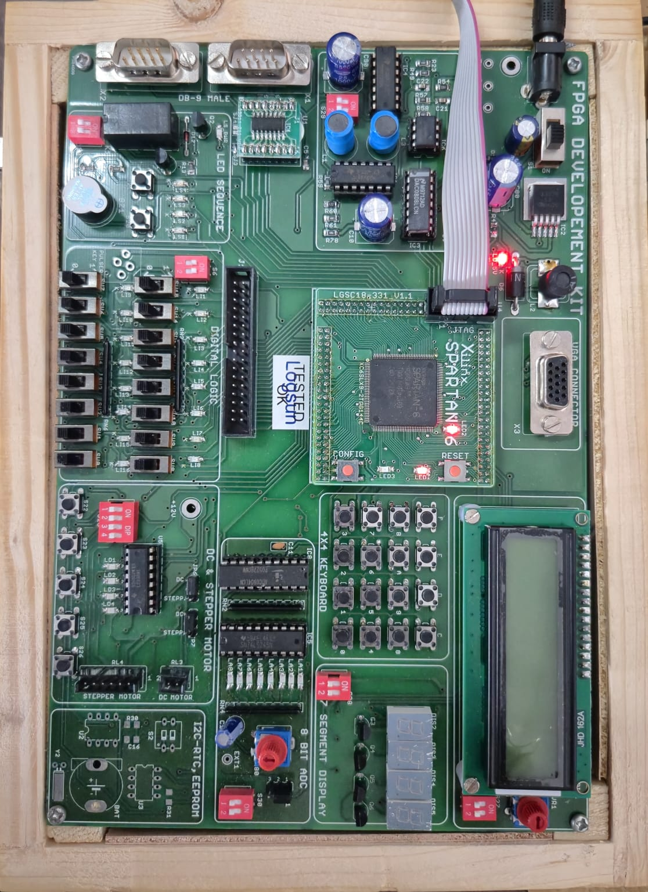
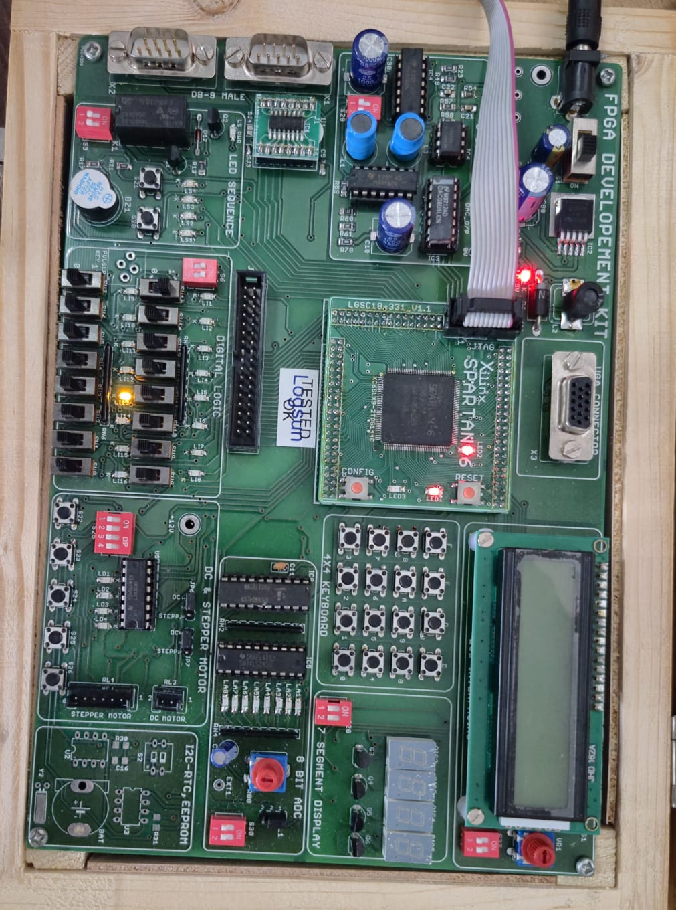
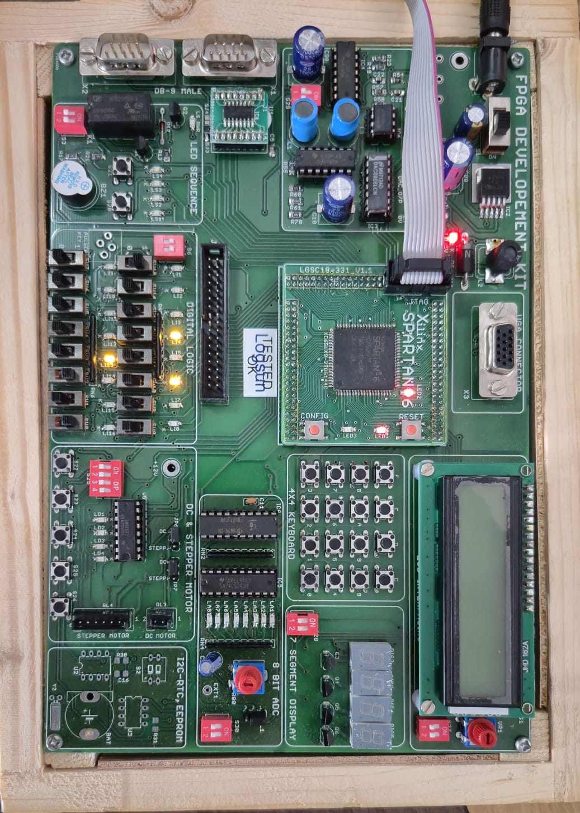
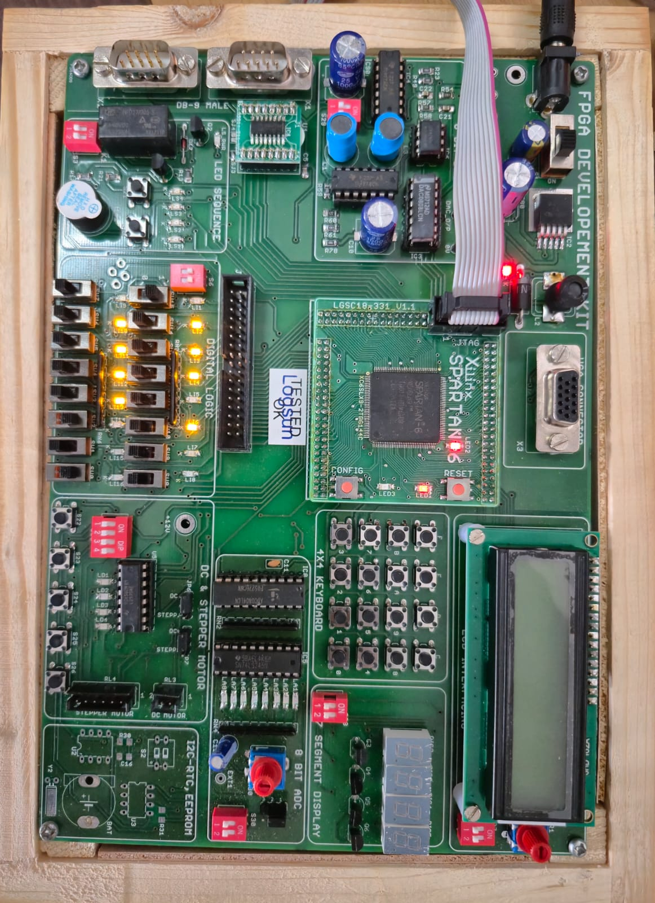

06 · Project Presentation
Presentation & Media
Access the project slide deck and demonstration video below.
07 · Achievements & Outcomes
Key Results
Measured outcomes from simulation, synthesis, and real-time FPGA implementation of the proposed Adaptive Low-Power LDPC Decoder.
Power Reduction
Dynamic power reduced using Early Termination logic.
Iteration Savings
Average decoding iterations reduced at high SNR.
Hardware Verified
Successfully tested on Spartan FPGA board.
FPGA Hardware Implementation




Real-time **Xilinx Spartan-6** FPGA development board used for implementation, synthesis validation, and hardware testing of the proposed LDPC decoder system.
Learning Outcomes
✔ Deep understanding of LDPC code structure, Tanner graphs, and iterative decoding
✔ Hands-on RTL design, synthesis, and timing closure on FPGA
✔ Fixed-point arithmetic analysis and quantization impact assessment
✔ Power estimation methodologies for digital hardware design
✔ Algorithm-to-hardware mapping and design space exploration
✔ Team-based project management, documentation, and technical presentation skills
Team Members
This project was collaboratively developed and completed by the following team members from the Digital Business Management programme.
Certificates
Official certificates awarded to the team members in recognition of the successful completion of this project.
08 · Future Scope
Future Directions
Potential extensions and research directions that build on this project's foundation.
5G NR LDPC Code Integration
Extend the decoder to support 5G New Radio LDPC codes (base graph BG1 / BG2), enabling deployment in real 5G baseband processing systems with scalable lifting factors.
ASIC Tapeout & Silicon Validation
Port the verified RTL to a standard-cell ASIC design flow (TSMC 28 nm / 65 nm) for further power optimization through voltage scaling, standard-cell library selection, and layout.
Machine-Learning-Aided Decoding
Investigate neural network augmentation of the Min-Sum check-node updates (Neural Offset MS), using learned offset factors to improve BER performance at low SNR.
Multi-Rate / Multi-Length Decoder
Design a reconfigurable decoder capable of switching between multiple LDPC code rates and block lengths at runtime, supporting adaptive modulation and coding (AMC) schemes.
Integration with Full Baseband Chain
Couple the LDPC decoder with a complete digital baseband receiver — including FFT, channel estimation, and QAM demapper — on a single FPGA platform for end-to-end evaluation.
09 · Team Details
Meet the Team
A group of three students from the Digital Business Management programme.
Chavan Yash
Roll No. 7 · 2026 Batch
Dhurjad Shradha
Roll No. 11 · 2026 Batch
Gadhari Kirtesh
Roll No. 12 · 2026 Batch
Prof. Mrs. H.H. Kulkarni
10 · References
References
- [1]R. G. Gallager, "Low-density parity-check codes," IRE Transactions on Information Theory, vol. 8, no. 1, pp. 21–28, 1962.
- [2]D. J. C. MacKay and R. M. Neal, "Near Shannon limit performance of low density parity check codes," Electronics Letters, vol. 32, no. 18, pp. 1645–1646, 1996.
- [3]J. Chen et al., "Reduced-complexity decoding of LDPC codes," IEEE Transactions on Communications, vol. 53, no. 8, pp. 1288–1299, 2005.
- [4]T. Brack et al., "A low complexity LDPC code decoder architecture suitable for next-generation WLAN," in Proc. GLOBECOM, 2006.
- [5]IEEE Standard 802.11n-2009, "Wireless LAN MAC and PHY Specifications."
- [6]M. M. Mansour and N. R. Shanbhag, "High-throughput LDPC decoders," IEEE Transactions on VLSI Systems, vol. 11, no. 6, pp. 976–996, 2003.
- [7]Xilinx Inc., Vivado Design Suite User Guide: Power Analysis and Optimization, UG907, 2023.
- [8]3GPP TS 38.212, "NR; Multiplexing and channel coding," Release 16, 2020.